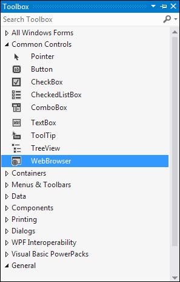
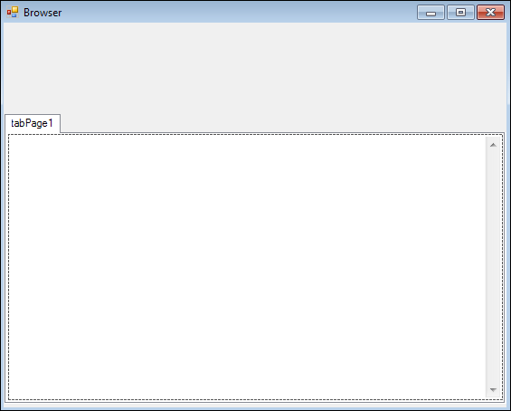
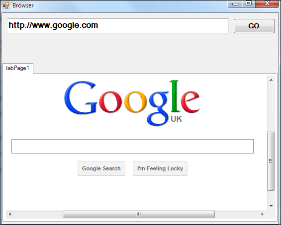

The WebBrowser Control
Adding a Browser to a Tab is quite easy. Locate the WebBrowser control in the toolbox, in the Common Controls category (we've chopped a few controls out, in the image below):

Click the control once to select it. Now draw out a browser in your TabPage1. It should fill the whole tab, and look like this:

The web browser you have just added is an instance of Internet Explorer. It will take the same settings as those from the Internet Options dialogue box in your control panel. So, for example, if you have scripting turned on in Internet Options, it will still be turned on in the WebBrowser control you have just added to the tab.
To see if it works as a browser, though, add a text box and button to your form. Change the Name of the text box to txtAddress, and type a web address for the Text property. Change the Name property of the button to btnGo, and the Text to GO. Aim for something like this:

Now double click your new button to get at the code stub.
The WebBrowser control has a method called Navigate. You use it to navigate to a web page that you specify. So add these two lines to your button code:
string WebPage = txtAddress.Text.Trim();
webBrowser1.Navigate(WebPage);
We're just getting the web page address from the text box. You would need to do some error checking here, though, testing for things like blank strings and valid web addresses.
The page you want to navigate to goes between the round brackets of the Navigate method. And that's it!
Test it out. Run your programme and click your button. You should find that the web page that you typed in the text box appears in the web browser that you placed on TabPage1. If it doesn't, make sure that you're online and that your firewall is not blocking your C# .NET software. Here's what ours looks like:

In the next part below, we'll add some navigation buttons. You'll also learn how about Image Lists.